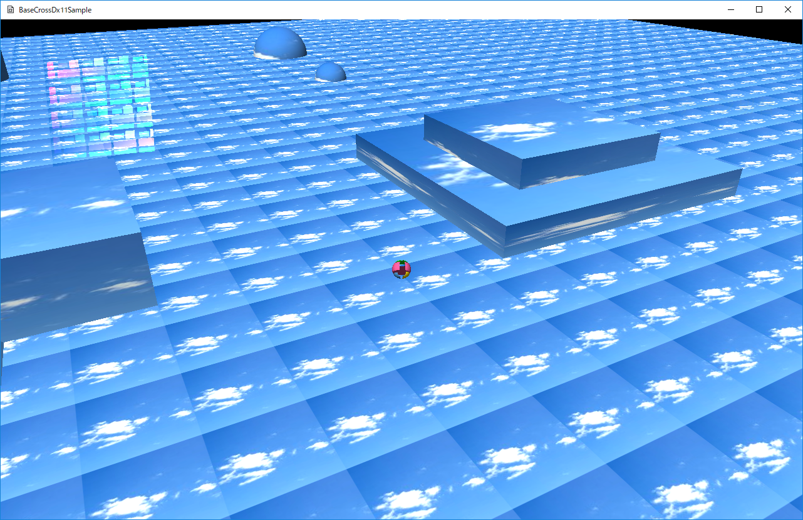

図0022a
１、Rigidbodyクラス（構造体）の実装 ２、Rigidbodyマネージャの実装
struct Rigidbody {
//オーナー
weak_ptr<GameObject> m_Owner;
//重力加速度
Vec3 m_Gravity;
//質量
float m_Mass;
//現在のフォース
Vec3 m_Force;
//速度
Vec3 m_Velocity;
//コリジョンのタイプ
CollType m_CollType;
//Fixedかどうか
bool m_IsFixed;
//スケール
Vec3 m_Scale;
//回転
Quat m_Quat;
//位置
Vec3 m_Pos;
//1つ前のスケール
Vec3 m_BeforeScale;
//1つ前の回転
Quat m_BeforeQuat;
//1つ前の位置
Vec3 m_BeforePos;
//中略
};
enum class CollType {
typeNone,
typeSPHERE,
typeCAPSULE,
typeOBB,
};
void Player::OnCreate() {
vector<VertexPositionNormalTexture> vertices;
vector<uint16_t> indices;
MeshUtill::CreateSphere(1.0f, 18, vertices, indices);
//メッシュの作成（変更できない）
m_SphereMesh = MeshResource::CreateMeshResource(vertices, indices, false);
//タグの追加
AddTag(L"Player");
//Rigidbodyの初期化
auto PtrGameStage = GetStage<GameStage>();
Rigidbody body;
body.m_Owner = GetThis<GameObject>();
body.m_Mass = 1.0f;
body.m_Scale = Vec3(0.25f);
body.m_Quat = Quat();
body.m_Pos = m_Posision;
body.m_CollType = CollType::typeSPHERE;
body.SetToBefore();
PtrGameStage->AddRigidbody(body);
}
class GameStage : public Stage {
Vec4 m_LightDir; ///<ライト向き
Camera m_Camera; ///<カメラ
//RigidbodyManager
shared_ptr<RigidbodyManager> m_RigidbodyManager;
public:
//中略
};
void Player::OnUpdate() {
auto& body = GetStage<GameStage>()->GetOwnRigidbody(GetThis<GameObject>());
//前回のターンからの経過時間を求める
float ElapsedTime = App::GetApp()->GetElapsedTime();
//コントローラの取得
auto CntlVec = App::GetApp()->GetInputDevice().GetControlerVec();
if (CntlVec[0].bConnected) {
if (!m_JumpLock) {
//Aボタン
if (CntlVec[0].wPressedButtons & XINPUT_GAMEPAD_A) {
body.m_BeforePos.y += 0.01f;
body.m_Pos.y += 0.01f;
body.m_Velocity += Vec3(0, 4.0f, 0);
m_JumpLock = true;
}
}
Vec3 Direction = GetMoveVector();
if (length(Direction) < 0.1f) {
body.m_Velocity.x *= 0.9f;
body.m_Velocity.z *= 0.9f;
}
else {
//フォースで変更する場合は以下のように記述
//body.m_Force += Direction * 10.0f;
//速度で変更する場合は以下のように記述
body.m_Velocity += Direction * 0.5f;
Vec2 TempVelo(body.m_Velocity.x, body.m_Velocity.z);
TempVelo = XMVector2ClampLength(TempVelo, 0, 5.0f);
body.m_Velocity.x = TempVelo.x;
body.m_Velocity.z = TempVelo.y;
}
}
body.m_Force += body.m_Gravity * body.m_Mass;
}
auto& body = GetStage<GameStage>()->GetOwnRigidbody(GetThis<GameObject>());
//速度で変更する場合は以下のように記述
body.m_Velocity += Direction * 0.5f;
body.m_Force += Direction * 10.0f;
Vec3 accel = m_Force * m_Mass;
m_Velocity += accel * ElapsedTime;
加速度 = Force / 質量
body.m_Force += body.m_Gravity * body.m_Mass;
Force = 質量 * 加速度
void Player::OnUpdate2() {
auto& body = GetStage<GameStage>()->GetOwnRigidbody(GetThis<GameObject>());
if (body.m_Pos.y <= m_BaseY) {
body.m_Pos.y = m_BaseY;
body.m_Velocity.y = 0;
m_JumpLock = false;
}
auto& StateVec = GetStage<GameStage>()->GetCollisionStateVec();
for (auto& v : StateVec) {
if (v.m_Src == &body) {
Vec3 Normal = v.m_SrcHitNormal;
Normal.normalize();
Vec4 v = (Vec4)XMVector3AngleBetweenNormals(Vec3(0, 1, 0), Normal);
if (v.x < 0.1f) {
m_JumpLock = false;
break;
}
}
if (v.m_Dest == &body) {
Vec3 Normal = v.m_SrcHitNormal;
Normal.normalize();
Vec4 v = (Vec4)XMVector3AngleBetweenNormals(Vec3(0, 1, 0), Normal);
if (v.x < 0.1f) {
m_JumpLock = false;
break;
}
}
}
auto LenVec = body.m_Pos - body.m_BeforePos;
LenVec.y = 0;
auto Len = LenVec.length();
if (Len > 0) {
Vec3 Cross = cross(Vec3(0, 1, 0), LenVec);
Quat Span(Cross, Len / 0.5f);
body.m_Quat *= Span;
}
}
class RigidbodyManager : public GameObject {
//Rigidbodyの配列
vector<Rigidbody> m_RigidbodyVec;
//衝突判定
void CollisionDest(Rigidbody& Src);
bool CollisionStateChk(Rigidbody* p1, Rigidbody* p2);
bool CollisionTest(Rigidbody& Src, Rigidbody& Dest, CollisionState& state);
//衝突ステートの配列
vector<CollisionState> m_CollisionStateVec;
public:
//--------------------------------------------------------------------------------------
/*!
@brief コンストラクタ
@param[in] StagePtr ステージのポインタ
*/
//--------------------------------------------------------------------------------------
RigidbodyManager(const shared_ptr<Stage>& StagePtr);
//--------------------------------------------------------------------------------------
/*!
@brief デストラクタ
*/
//--------------------------------------------------------------------------------------
virtual ~RigidbodyManager();
//--------------------------------------------------------------------------------------
/*!
@brief Rigidbodyの配列を得る
@return Rigidbodyの配列
*/
//--------------------------------------------------------------------------------------
const vector<Rigidbody>& GetRigidbodyVec()const {
return m_RigidbodyVec;
}
vector<Rigidbody>& GetRigidbodyVec() {
return m_RigidbodyVec;
}
//--------------------------------------------------------------------------------------
/*!
@brief 衝突情報の配列を得る
@return 衝突情報の配列
*/
//--------------------------------------------------------------------------------------
const vector<CollisionState>& GetCollisionStateVec()const {
return m_CollisionStateVec;
}
vector<CollisionState>& GetCollisionStateVec(){
return m_CollisionStateVec;
}
//--------------------------------------------------------------------------------------
/*!
@brief 指定のオーナーのRigidbodyを得る
@param[in] OwnerPtr オーナーのポインタ
@return 指定のオーナーのRigidbody
*/
//--------------------------------------------------------------------------------------
Rigidbody& GetOwnRigidbody(const shared_ptr<GameObject>& OwnerPtr) {
for (auto& v : m_RigidbodyVec) {
auto shptr = v.m_Owner.lock();
if (shptr == OwnerPtr) {
return v;
}
}
throw BaseException(
L"指定のRigidbodyが見つかりません",
L"!Rigidbody",
L"RigidbodyManager::GetOwnRigidbody()"
);
}
//--------------------------------------------------------------------------------------
/*!
@brief 初期化
@return なし
*/
//--------------------------------------------------------------------------------------
virtual void OnCreate() override {}
//--------------------------------------------------------------------------------------
/*!
@brief フォースを初期化する
@return なし
*/
//--------------------------------------------------------------------------------------
void InitRigidbody();
//--------------------------------------------------------------------------------------
/*!
@brief SrcのDestからのエスケープ
@param[in] Src Srcのポインタ
@param[in] Dest Destのポインタ
@return なし
*/
//--------------------------------------------------------------------------------------
void Escape(Rigidbody* Src, Rigidbody* Dest);
//--------------------------------------------------------------------------------------
/*!
@brief 更新
@return なし
*/
//--------------------------------------------------------------------------------------
virtual void OnUpdate()override;
//--------------------------------------------------------------------------------------
/*!
@brief 最終更新
@return なし
*/
//--------------------------------------------------------------------------------------
virtual void OnUpdate2()override;
//--------------------------------------------------------------------------------------
/*!
@brief 描画
@return なし
*/
//--------------------------------------------------------------------------------------
virtual void OnDraw()override {}
};
//Rigidbodyの配列
vector<Rigidbody> m_RigidbodyVec;
//中略
//衝突ステートの配列
vector<CollisionState> m_CollisionStateVec;
struct CollisionState {
Rigidbody* m_Src;
Vec3 m_SrcHitNormal;
Rigidbody* m_Dest;
Vec3 m_DestHitNormal;
float m_HitTime;
};
void GameStage::OnCreate() {
//Rigidbodyマネージャの初期化
m_RigidbodyManager
= ObjectFactory::Create<RigidbodyManager>(GetThis<GameStage>());
//以下略
}
void GameStage::OnUpdateStage() {
//ターン毎の初期化
m_RigidbodyManager->InitRigidbody();
for (auto& v : GetGameObjectVec()) {
//各オブジェクトの更新
v->OnUpdate();
}
//Rigidbodyマネージャの更新（衝突判定など）
m_RigidbodyManager->OnUpdate();
for (auto& v : GetGameObjectVec()) {
//各オブジェクトの最終更新
v->OnUpdate2();
}
//自分自身の更新(カメラ)
this->OnUpdate();
//Rigidbodyマネージャの最終更新（衝突判定情報のクリア）
m_RigidbodyManager->OnUpdate2();
}
//ターン毎の初期化
void RigidbodyManager::InitRigidbody() {
//1つ前の位置にセットとフォースの初期化
for (auto& v : m_RigidbodyVec) {
v.SetToBefore();
v.m_Force = Vec3(0);
}
}
void RigidbodyManager::OnUpdate() {
//前回のターンからの経過時間を求める
float ElapsedTime = App::GetApp()->GetElapsedTime();
//フォースから速度に変換
for (auto& v : m_RigidbodyVec) {
Vec3 accel = v.m_Force * v.m_Mass;
v.m_Velocity += accel * ElapsedTime;
}
//衝突判定を行い、ヒットがあれば速度を変更する
if (m_RigidbodyVec.size() >= 2) {
//衝突判定
for (auto& v : m_RigidbodyVec) {
CollisionDest(v);
}
}
if (m_CollisionStateVec.size() >= 2) {
//ヒットタイムでソート（ヒットタイムが）近いものに対応
auto func = [&](CollisionState& Left, CollisionState& Right)->bool {
return (Left.m_HitTime < Right.m_HitTime);
};
std::sort(m_CollisionStateVec.begin(), m_CollisionStateVec.end(), func);
}
//衝突応答
for (auto& v : m_CollisionStateVec) {
if (!v.m_Src->m_IsFixed) {
v.m_Src->Move(v.m_HitTime);
v.m_Src->m_Velocity.slide(v.m_SrcHitNormal);
}
if (!v.m_Dest->m_IsFixed) {
v.m_Dest->Move(v.m_HitTime);
v.m_Dest->m_Velocity.slide(v.m_DestHitNormal);
}
}
//設定された速度をもとに衝突無しのオブジェクトの位置の決定
for (auto& v : m_RigidbodyVec) {
v.Move(ElapsedTime);
}
//エスケープ処理
for (auto& v : m_CollisionStateVec) {
if (!v.m_Src->m_IsFixed) {
Escape(v.m_Src, v.m_Dest);
}
if (!v.m_Dest->m_IsFixed) {
Escape(v.m_Dest ,v.m_Src);
}
}
}
//前回のターンからの経過時間を求める
float ElapsedTime = App::GetApp()->GetElapsedTime();
//フォースから速度に変換
for (auto& v : m_RigidbodyVec) {
Vec3 accel = v.m_Force * v.m_Mass;
v.m_Velocity += accel * ElapsedTime;
}
//衝突判定を行い、ヒットがあれば速度を変更する
if (m_RigidbodyVec.size() >= 2) {
//衝突判定
for (auto& v : m_RigidbodyVec) {
CollisionDest(v);
}
}
if (m_CollisionStateVec.size() >= 2) {
//ヒットタイムでソート（ヒットタイムが）近いものに対応
auto func = [&](CollisionState& Left, CollisionState& Right)->bool {
return (Left.m_HitTime < Right.m_HitTime);
};
std::sort(m_CollisionStateVec.begin(), m_CollisionStateVec.end(), func);
}
//衝突応答
for (auto& v : m_CollisionStateVec) {
if (!v.m_Src->m_IsFixed) {
v.m_Src->Move(v.m_HitTime);
v.m_Src->m_Velocity.slide(v.m_SrcHitNormal);
}
if (!v.m_Dest->m_IsFixed) {
v.m_Dest->Move(v.m_HitTime);
v.m_Dest->m_Velocity.slide(v.m_DestHitNormal);
}
}
１、同じターン内で複数の衝突があった場合、本来なら、最初の衝突の応答を計算して、 その後それに合わせた判定を行わなければならないが、簡略化している。 ２、本来なら、回転も応答処理に入れるべきだが、その処理は行っていない ３、回転要素を加味しない代わりに、スライドと呼ばれる処理で移動速度を変更している
Escape(v.m_Src, v.m_Dest);
void RigidbodyManager::OnUpdate2() {
//衝突情報のクリア
m_CollisionStateVec.clear();
}
//プレイヤーの作成
AddGameObject<Player>(
L"TRACE_TX",
true,
Vec3(0.0f, 0.125f, 0.0f)
);
//カプセルプレイヤーの作成
//AddGameObject<CapsulePlayer>(
// L"TRACE_TX",
// true,
// Vec3(0.0f, 0.25f, 0.0f)
// );
//OBBプレイヤーの作成
//AddGameObject<ObbPlayer>(
// L"TRACE_TX",
// true,
// Vec3(0.0f, 0.125f, 0.0f)
// );